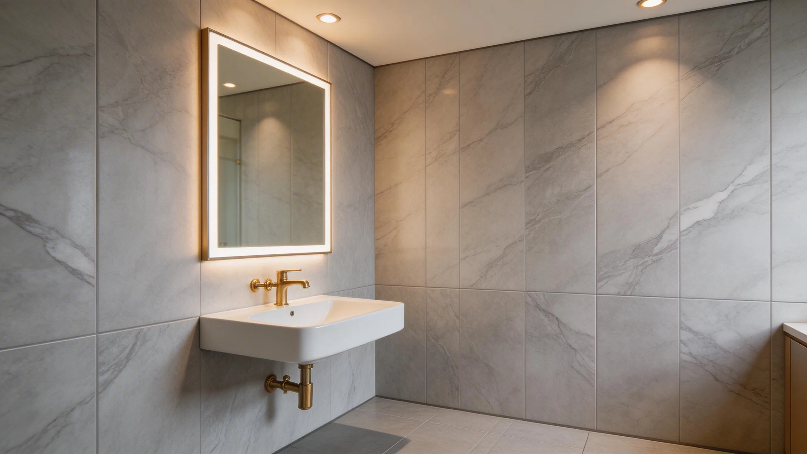
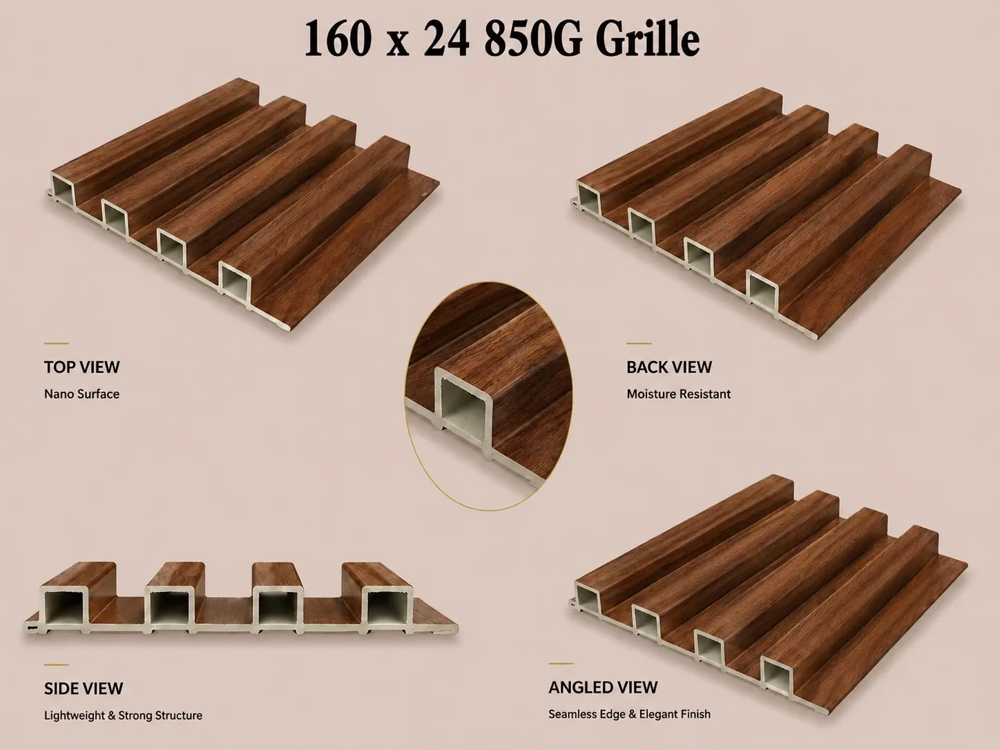

Wall Panel Buying Guides: Choose, Inspect and Order with Confidence
Independent, practical answers for importers and distributors comparing materials, approving samples, planning orders and controlling wall panel quality.
Answers to the questions buyers ask first

Are Wall Panels Waterproof? 15 Straight Answers for Buyers
Direct, professional answers about waterproofing, bathrooms, tiles, outdoor use, WPC disadvantages, PU stone, UV boards and ordering.
Wall Panel Standards: What Independent Evidence Actually Proves
Use institutional sources to assess moisture, weathering, fire, VOCs, color, inspection, packing and trade terms.

Are PVC Wall Panels Good? Uses, Limits and Buyer Checks
Understand applications, buyer checks, sample questions, and cooperation notes before sourcing PVC wall panels.

PVC vs WPC Wall Panels: Which Is Better for Your Market?
A practical comparison for distributors choosing the right wall panel line for retail, wholesale, or project use.
Choose the right material and specification

Are PVC Wall Panels Waterproof in Bathrooms?
Understand the product, joint, substrate and installation questions that matter in humid applications.

Fluted Wall Panels: Profiles, Uses and Buyer Guide
Plan profiles, finishes, accessories and market positioning for a practical fluted wall panel range.

PU Stone Panels vs Natural Stone: Which Should You Choose?
Compare weight, installation, transport and sourcing considerations before selecting a stone-look wall system.

PVC Ceiling Panels vs Wall Panels: Key Differences
Compare applications, profiles, support systems, finishes, accessories and order specifications.
PVC Wall Panel Thickness and Profiles: What to Check
Compare dimensions, profile construction, joints, surfaces, accessories and packing for your market or project.
Evaluate samples, suppliers and production quality
10 Questions to Ask a Wall Panel Supplier Before Ordering
Compare suppliers using the same questions about specifications, samples, quality, packing, lead time and export support.

Wall Panel Sample Checklist Before Mass Production
Use a repeatable sample checklist before approving wall panel specifications, color, surface, profile and packing.

How to Check Wall Panel Quality Before a Bulk Order
Key checks for color consistency, surface finish, dimensions, packing, samples, and pre-shipment communication.
How to Prevent Wall Panel Color Differences Between Batches
Build color standards, approved samples and batch records into repeat wall panel orders.
Wall Panel Order Process: From Inquiry to Shipment
See how product confirmation, samples, contracts, production inspection and shipping fit together.
Plan quantities, product mixes, branding and shipping
How Many Wall Panels Do I Need? Order Calculation Guide
Calculate coverage using wall dimensions, net panel width, cutting layout, project allowance and packing units.
Best Wall Panel Mix for Hotels, Retail and Homes
Match wall panels, floors and accessories to hotel, retail and residential project requirements.

Mixed-Container Wall Panel Orders: A Buyer Planning Guide
Learn how a coordinated product mix can reduce first-order risk and test demand across wall panel categories.
Wall Panel Packaging Checklist for Overseas Buyers
Check cartons, labels, protection, quantities, loading records and shipping marks before dispatch.
OEM Wall Panels: Private Label Checklist Before Production
Confirm artwork, labels, cartons, samples, quantities and approval responsibilities before production.
FOB vs CIF for Wall Panel Orders: Which Is Better?
A practical comparison of cost responsibility, freight control and documents for overseas wall panel buyers.
Turn product choices into complete room packages

Hotel Corridor Wall Panels: Fluted Panel Project Guide
Plan feature zones, finishes, trims, lighting, batches and replacement stock for a hotel corridor package.

Bedroom Feature Wall Panels: Layout and Ordering Guide
Coordinate wall-panel composition with the bed, lighting, sockets, trims, samples and packing.

Office Lobby Wall Panels: Design and Project Buyer Guide
Coordinate the focal wall, company signage, durability, project lighting and area-based packing.